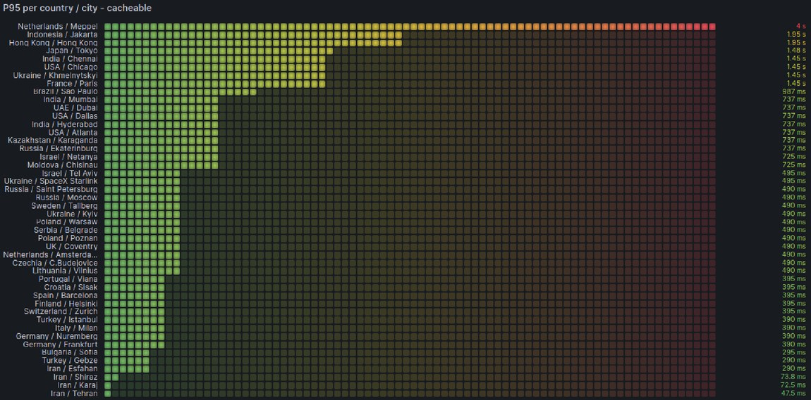
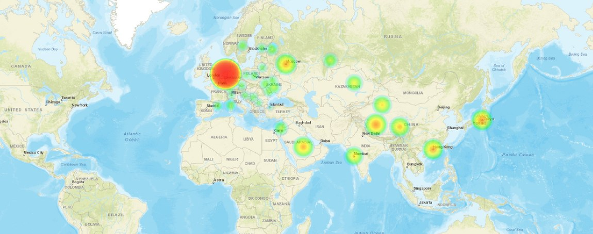
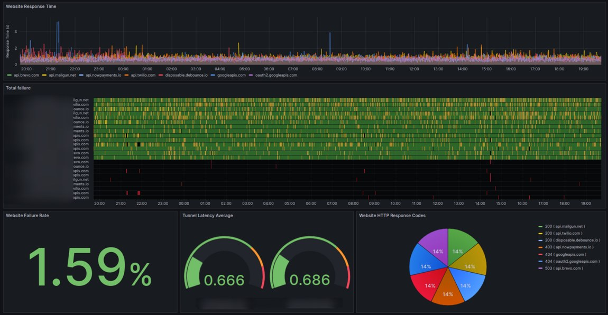
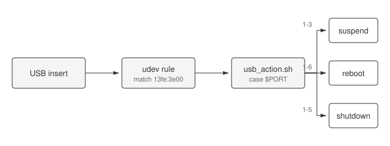

/ Style guide
Everything css/blog.css supports. Find what you want, hit Copy, paste it into your post.
How to use
Start from blog/_template.html — copy it to blog/<slug>.html. It already links
the stylesheet with <link rel="stylesheet" href="../css/blog.css">.
Most things need no class at all. Plain <p>, <h2>,
<ul>, <table>, <pre> and <img> are
already styled. Classes below exist only where HTML has no tag for the idea.
On this page
- Text & headings
- Lists
- Code & keys
- Code blocks with a filename
- Syntax highlighting
- Shell / terminal sessions
- Logs
- Diffs
- Tables
- Images & figures
- Image gallery + lightbox
- Audio & video
- Quotes
- Callouts
- Cards & grid
- Post meta, badges, TOC
- Footnotes, back link, utilities
- Copy buttons, filter, anchors, dark mode
- Equations (KaTeX)
- Interactive figures
- Mermaid, WaveDrom, three.js
- draw.io diagrams
- Annotated photos, BOM, specs
- Full-bleed, show-the-code, series nav
- Post index row
- Full post skeleton
Text & headings
No classes. Just write the tags.
Heading level 1
Heading level 2
Heading level 3
Heading level 4
A lead paragraph — the hook right under the title.
A normal paragraph with bold text, italic text, a link, and small print.
A muted paragraph, for asides.
Centered text.
Lists
- Unordered item
- Another item
- Nested item
- First step
- Second step
- Checklist item, ticked
- Another done thing
Code & keys
Inline git rebase -i sits in the text. Press Ctrl + W then V.
$ kubectl get pods -n prod
NAME READY STATUS
api-7d9f-4kx2z 1/1 RunningCode blocks with a filename
Wrap any <pre> in .code and put the filename in .code-ttl. Add class="code-ttl ink" when the block below it is dark.
docker-compose.yml
services:
api:
image: ghcr.io/acme/api:1.4.2
healthcheck:
test: ["CMD", "curl", "-f", "http://localhost:8080/healthz"]
interval: 10sSyntax highlighting
Name the language on the <code> tag — class="language-go" — and
highlight.js colors it. The library is vendored at js/highlight.min.js (no CDN, works
offline); the two script lines are already in the template. 38 languages including
bash yaml json dockerfile nginx
go rust python sql diff
ini typescript. Opt a block out with class="nohighlight".
def backoff(attempt: int, cap: float = 30.0) -> float:
"""Exponential backoff with a ceiling."""
return min(cap, 2 ** attempt * 0.1)Dark variant — add class="ink" to the <pre>. Same token palette, tuned for the dark surface.
main.go
func main() {
srv := &http.Server{Addr: ":8080", Handler: mux}
if err := srv.ListenAndServe(); err != nil {
log.Fatalf("server died: %v", err)
}
}A config file, highlighted the same way:
Dockerfile
FROM golang:1.23-alpine AS build
WORKDIR /src
COPY . .
RUN go build -o /bin/api ./cmd/api
FROM alpine:3.20
COPY --from=build /bin/api /bin/api
ENTRYPOINT ["/bin/api"]Shell / terminal sessions
<pre class="shell">. Mark each command with .cmd — the
$ prompt is drawn by CSS, so don't type it. Use .cmd.root for a
# prompt, .out for output, .cm for comments, and
.hl to make one value pop.
kubectl get pods -n prodNAME READY STATUS RESTARTS api-7d9f-4kx2z 1/1 Running 0 worker-5c8b-9mtq1 0/1 CrashLoopBackOff 7 # tail the unhappy onekubectl logs worker-5c8b-9mtq1 --previous
With a title bar, and a root prompt:
bootstrap.sh
apt-get install -y containerdsystemctl enable --now containerdCreated symlink /etc/systemd/system/multi-user.target.wants/containerd.service
Logs
<pre class="log">. Timestamps use .ts, severities use
.lv-debug / .lv-info / .lv-warn / .lv-error /
.lv-fatal. Long lines wrap instead of scrolling.
10:04:09.117 DEBUG flink-taskmanager Slot request 7 acknowledged 10:04:11.204 INFO flink-jobmanager Job 3f2a checkpoint 812 completed in 1.2s 10:04:12.881 WARN flink-taskmanager Backpressure on operator KeyedProcess -> Sink 10:04:19.032 ERROR flink-taskmanager Connection to 10.2.4.19:6123 refused 10:04:19.101 FATAL flink-jobmanager Job 3f2a failed after 4 restart attempts
Diffs
Paste raw git diff output into class="language-diff" — nothing to mark up by hand.
deployment.yaml
@@ -12,7 +12,7 @@ spec:
resources:
limits:
- memory: "512Mi"
+ memory: "1Gi"
requests:
cpu: "250m"Tables
Plain <table> for data. class="cheat" for two-column key/value lists.
| Signal | Threshold | Action |
|---|---|---|
| p99 latency | > 500ms | Page on-call |
| Error rate | > 1% | Roll back |
:wq | write and quit |
C-w hjkl | change window |
Images & figures
class="hero" for the image under the title, class="plain" to drop the border, <figure> to add a caption.

Image gallery + lightbox
Thumbnails in a grid; click one to maximize it. Click a thumbnail below — it works on this page.
Arrow keys page through, Esc closes. The <a href> points at the full-size
image, so with JavaScript off the thumbnail still opens it normally. Default is 3 columns —
add class="gallery wide" for 2 or class="gallery tight" for 4.
Load js/lightbox.js once at the end of the post.
{kind=link}

{kind=link}

{kind=link}

A single image can be zoomable on its own with class="zoom" — no gallery needed:

Audio & video
Native <audio> and <video> controls on purpose — keyboard and
screen-reader support for free, and nothing to maintain. Keep
preload="none" so the page stays light until someone presses play.
The players below have no src (there is no sample media in the repo), so they render
empty — point src at a real file and they work.
Video, with a poster frame so it looks right before it loads:
For anything in an iframe — YouTube, asciinema — .embed keeps a 16:9 box that scales:
Quotes
Everything fails all the time.
— Werner Vogels
Callouts
Four flavours. The <p class="ttl"> heading line is optional.
Note
Neutral aside — background the reader can skip.
Tip
Something that saves the reader time.
Careful
A sharp edge worth knowing about before you hit it.
Don't
This will page someone at 3am.
A callout with no title works fine too.
Cards & grid
Two columns, collapsing to one under 620px. An <a class="card"> is clickable.
Plain card
A box for grouping a small idea.
Clickable card
Hover highlights the border.
Post meta, badges, TOC
Footnotes, back link, utilities
A claim that needs a source.1
- The source, with a link back.
Monospaced line via class="mono".
Full post skeleton
The whole file. This is blog/_template.html — copy it and start writing.
<!DOCTYPE html>
<html lang="en">
<head>
<meta charset="utf-8">
<meta name="viewport" content="width=device-width, initial-scale=1">
<title>Post title — MJH</title>
<link rel="stylesheet" href="../css/blog.css">
</head>
<body>
<nav>
<div class="wrap">
<span class="brand"><a href="../index.html">MJH</a></span>
<span class="links">
<a href="../resume_short.html">Resume</a>
<a href="../blog.html">Blog</a>
<a href="../index.html#about">About</a>
</span>
</div>
</nav>
<div class="wrap">
<article>
<span class="date">2026-08-10</span>
<h1>Post title</h1>
<img class="hero" src="../images/slug.svg" alt="">
<p class="lead">One-sentence hook that says why this post exists.</p>
<h2>First section</h2>
<p>Just write paragraphs. No classes needed.</p>
<div class="code">
<p class="code-ttl">example.yml</p>
<pre><code class="language-yaml">replicas: 3</code></pre>
</div>
<a class="back" href="../blog.html">← Back to blog</a>
</article>
</div>
<!-- drop these two lines if the post has no code -->
<script src="../js/highlight.min.js"></script>
<script>hljs.highlightAll();</script>
<!-- drop this if the post has no gallery or zoomable image -->
<script src="../js/lightbox.js"></script>
</body>
</html>
Copy buttons, filter, anchors, dark mode
All four come from js/enhance.js, which is safe to load on every post — each part
does nothing if its markup is absent. They are live on this page: hover any code
block for a Copy button, hover a heading for its ¶ anchor, use the box above the
cheatsheet table to filter it, and the moon in the nav toggles dark mode.
- Copy buttons — added to every
<pre>automatically. UsesinnerText, so the CSS-drawn$prompt is not copied. - Table filter — add
filterable:<table class="cheat filterable">. Built for 60-row cheatsheets. - Heading anchors — every
h2/h3in an<article>gets an id and a linkable¶. - Auto-TOC — drop in
<div class="toc" data-auto><p class="ttl">Contents</p></div>and it fills itself from those headings. Addclass="toc stick"to make it follow you on wide screens. - Dark mode — light is the default; dark is an explicit choice
made with the nav toggle and remembered in
localStorage. The site deliberately does not followprefers-color-scheme, so a visitor on a dark OS still lands on light. The one-line snippet in the template's<head>re-applies a saved choice before first paint, so there is no flash.
Equations (KaTeX)
KaTeX is not vendored — add the three lines from the template's footer to a post
that needs maths. Then $…$ renders inline and $$…$$ as a block.
.eqn adds a right-aligned equation number.
Below shows the markup unrendered, since this page doesn't load KaTeX.
The controller output is $u(t) = K_p e(t) + K_i \int e\,dt + K_d \frac{de}{dt}$.
Interactive figures
The shell for every canvas-based figure: a stage, a row of controls, a caption. The maths goes in
a per-post script; this just makes them all look like the same body of work. Sliders pick up the
site teal via accent-color.
Pair it with the source, in a native <details> — no JS:
Show the code that made this figure
def step(kp, ki, kd, dt=0.01, n=1000):
e_sum = e_prev = y = v = 0.0
for _ in range(n):
e = 1.0 - y
e_sum += e * dt
u = kp*e + ki*e_sum + kd*(e - e_prev)/dt
v += (u - 0.6*v) * dt
y += v * dt
e_prev = e
yield yMermaid, WaveDrom, three.js
None of these are vendored, and their sources live in diagrams/ rather than in the page — the boxes below just carry a data-src. The CSS only reserves a correctly sized, correctly
themed box so the page doesn't jump while a library loads. Import the library in the one post that
needs it — the template footer has the exact snippets.
WaveDrom draws digital timing diagrams — SPI, I²C, UART — from a small JSON blob.
Keep the JSON in diagrams/ and point at it with data-src; the page plants it in the <script type="WaveDrom"> tag the library expects:
And a WebGL stage — three.js renders into it, with a static image as the no-JS fallback:
draw.io diagrams
Read-only, but live: drag to pan, scroll or use the hover toolbar to zoom, and the toolbar's last button opens it fullscreen. There is no editor in this build — readers can look, not change. Try it on the diagram below.
How to add one
- In draw.io, File → Save as → Device, and drop the
.drawiointodiagrams/. - Point the viewer at the file — one line in the post, no XML:
<div class="drawio mxgraph" data-mxgraph='{"url":"../diagrams/thing.drawio", …}'></div> - Load the viewer script once at the end of the page.
The rule for every asset
Anything that isn't code lives in its own file and is referenced by link — diagrams, timing definitions, images, media. Only code belongs inline, where being able to read it is the point. It keeps the post source short, keeps the asset editable in the tool that made it, and makes a diff show a diagram change as a diagram change.
Two things to know
The viewer is about 4 MB. Load it only in posts that actually contain a diagram, and never alongside three.js in the same post.
The file is fetched at runtime, so it has to sit on the same site as the page. If you ever need a diagram with no extra request at all, swap "url" for "xml" and inline it — draw.io’s File → Embed → HTML produces that form.
If a post only needs a picture — no panning, no zooming, and it should still work with JavaScript
off and print properly — export from draw.io as SVG with "Include a copy of my diagram"
ticked and use figure.diagram instead. The file stays re-openable in draw.io, and the
class pins a light background so the dark strokes survive the dark theme:
{kind=link}

Annotated photos, BOM, specs
Numbered pins positioned over a photo with left/top percentages, plus a
legend whose numbers are generated by a CSS counter — so the two never drift out of sync.
- 3V3 regulator — gets warm under load
- MCU, with the crystal just north of it
- Debug header (SWD)
A bill of materials, and a spec sheet:
| Ref | Qty | Value | Package |
|---|---|---|---|
| C1, C2 | 2 | 22 pF | 0603 |
| U1 | 1 | AMS1117-3.3 | SOT-223 |
| Supply voltage | 3.0 – 3.6 V |
|---|---|
| Quiescent current | 4.2 mA |
| Operating temp | −40 to 85 °C |
Full-bleed, series nav
class="bleed" lets a figure escape the 720px reading column — for attractors, wide diagrams, and board shots:
Previous/next links for a series — the Vim post is "Cheatsheet #1", so this earns its place:
There is also a print stylesheet: nav, copy buttons, filter boxes and series links are hidden, dark code blocks invert to ink-on-white, and tables and figures avoid page breaks. Press Ctrl+P on any post to see it.
Post index row
Not for inside a post — this is the <li> you paste into blog.html to list a new post.
/ Blog
The tagline under a listing-page title.
Add a component here whenever you add one to css/blog.css — the snippet writes itself.